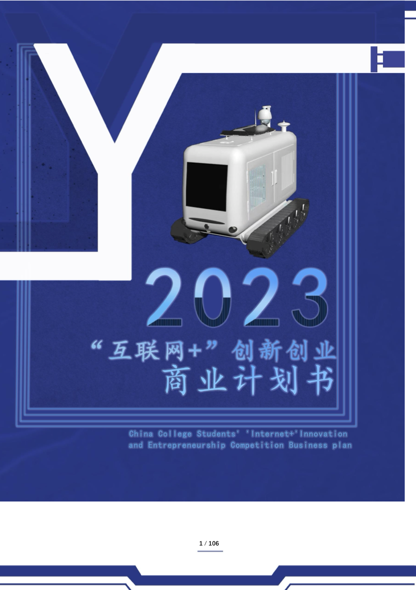
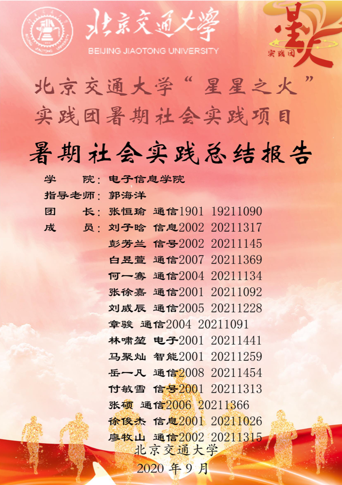

Focus
研究方向与能力画像
研究围绕物联网和边缘计算场景中的动态数据演化、分布异构、标注资源不足和通信计算受限问题展开，关注如何让分布式智能模型更及时、更稳定、更高效地完成持续更新。
Papers & Patent
论文与专利


Competitions
竞赛经历
竞赛部分重点展示项目背景、方案思路、关键难点、个人负责内容和复盘思考。公开仓库中保留轻量版 PPT/PDF 与获奖证明。

2026.03 - 2026.08 / 华北赛区初赛一等奖
研电赛：天枢 - 融合控制安全与虚实共演的空地群智决策系统
- 背景
- 森林巡检、灾害救援等开放环境中，无人机、无人车和移动机器人需要协同完成复杂任务。
- 实现想法
- 结合大模型任务理解、多智能体协同调度、数字孪生预演和安全控制，实现任务分解、能力匹配与虚实验证。
- 难点
- 异构智能体能力不同、场景动态变化强，任务规划需要兼顾协同效率和安全约束。
- 负责内容
- 负责多智能体协同部分技术设计，参与任务分解、能力匹配、协同执行机制设计，以及商业计划书和汇报材料整理。
- 思考
- 复杂系统的价值不只在单点算法，而在“任务理解 - 协同决策 - 安全验证 - 商业落地”的完整闭环。

2023.03 - 2023.08 / 北京赛区主赛道二等奖
互联网+：全自动光伏清洗运载推送装置
- 背景
- 大型光伏电站中，清洗机器人跨阵列连续作业能力不足，人工搬运和设备调度成本较高。
- 实现想法
- 设计运载机器人与多台清洗机器人协同工作，由运载机器人完成运输、投放、回收和跨阵列转移。
- 难点
- 需要把工程结构、应用场景、商业模式和答辩表达统一起来，让技术方案具备可理解的落地价值。
- 负责内容
- 负责整体方案梳理和技术路线设计，参与机器人系统结构设计、创新点提炼、申报书、商业计划书和答辩材料撰写。
- 思考
- 技术展示要服务真实问题，优秀的竞赛项目需要同时说清“为什么需要、怎么实现、如何推广”。
Project
项目经历：科研智能体“研途喵”
一个面向高校科研全过程的 AI 工作台，将论文检索、智能阅读、知识入库、热点监测、方向分析、学者追踪和科研画像串联起来。

Social Practice
社会实践：星星之火

参与“星星之火”暑期社会实践团，通过调研、访谈、材料整理和成果汇报，把校园学习与社会观察连接起来。该经历获得社会实践评比第二名。
- 背景
- 围绕社会基层实践与青年观察展开调研，关注实践现场中的真实问题和可传播成果。
- 负责内容
- 参与调研资料收集、报告内容整理、实践成果汇总和展示表达。
- 思考
- 社会实践训练了从真实场景提炼问题、组织材料和清晰表达的能力，也补充了科研之外的观察视角。
Awards
奖项与证明
用图片轮播展示奖学金、竞赛、优秀毕业生、优秀共青团员和学生工作等证明材料。


Resume
科研简历
简历可直接在线预览，也可以下载 PDF，方便面试官快速查看完整经历。
Timeline
时间线
- 参与“星星之火”暑期社会实践团，获得社会实践评比第二名。
- 北京交通大学大学生智能汽车竞赛三等奖。
- 北京交通大学大学生数学建模竞赛一等奖。
- 参与基于深度强化学习和障碍函数的跟驰模型构建，项目获大创市级立项。
- 互联网+ 北京赛区主赛道二等奖：全自动光伏清洗运载推送装置。
- 获北京交通大学优秀毕业生。
- 连续获得北京交通大学硕士一等学业奖学金。
- 发明专利“一种触发式联邦持续学习调度与关键数据共享的方法”公布。
- FedTeddi 录用于 IEEE ICPADS 2025。
- 研电赛商业计划书专项赛：天枢项目获华北赛区初赛一等奖。
- 完成科研智能体平台“研途喵”的原型设计、功能规划和展示页整理。